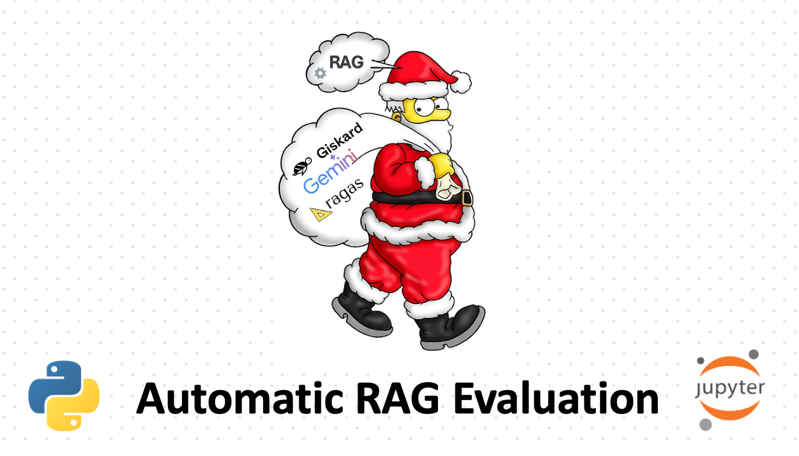

Automatic RAG Dataset Creation and Evaluation with Giskard & RAGAS
This article presents a comprehensive guide on how to automatically create and evaluate RAG datasets for large language models. The workflow leverages several powerful tools, including Langchain, Gemmini, RAGAS, Giskard, and LangSmith. It is designed to help you quickly evaluate Retrieval-Augmented Generation (RAG) systems without the need to manually curate large datasets.

In this pipeline, you'll explore the following:
- How to automatically generate realistic questions and answers using Giskard.
- How to evaluate the RAG system using RAGAS to compute key metrics such as Context Precision, Answer Similarity, and Faithfulness.
- How to monitor and track your system's performance with LangSmith at runtime.
By using this automated approach, you eliminate the need to manually create a labeled dataset, streamlining the process for testing and refining RAG systems. The pipeline is open-source and easy to integrate into your existing projects.
Front page